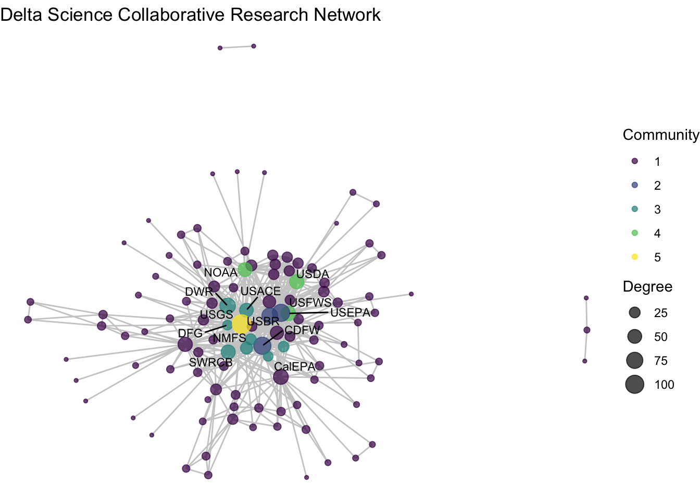

6 Then we can create those same layout tables for each subgraph
fixed_coord_t1 <- create_layout(net1_t1, layout = 'fr')
# joins don't seem to wrok
#fixed_coord_t1 <- fixed_coord_t1[,-c(1:2)]
#fixed_coord_t1 <- right_join(fixed_coord[,c(1,2,6)], fixed_coord_t1)
coords_we_need <- fixed_coord[fixed_coord$id %in% fixed_coord_t1$id, c(1,2,6)]
fixed_coord_t1$x <- coords_we_need$x
fixed_coord_t1$y <- coords_we_need$y
fixed_coord_t1 %>%
ggraph() +
geom_edge_link(width = 0.5, alpha = 0.5, color = "gray70") +
geom_node_point(aes(size = degree),
color = clrs[6]) +
theme_void() +
theme(legend.position = "none") +
geom_node_text(aes(label = labels),
family = "Times",
size = 3,
color="black") +
xlim(c(-9, 7)) +
ylim(c(-7, 8))## Warning: Removed 1 rows containing non-finite values (`stat_edge_link()`).## Warning: Removed 2 rows containing missing values (`geom_point()`).## Warning: Removed 2 rows containing missing values (`geom_text()`).
subplot_viz_fixed <- function(fixed_coords, netname){
fixed_coord_t <- create_layout(netname, layout = 'fr')
coords_we_need <- fixed_coord[fixed_coord$id %in% fixed_coord_t$id, c(1,2,6)]
fixed_coord_t$x <- coords_we_need$x
fixed_coord_t$y <- coords_we_need$y
fixed_coord_t %>%
ggraph() +
geom_edge_link(width = 0.5, alpha = 0.5, color = "gray70") +
geom_node_point(aes(size = degree),
color = clrs[4]) +
theme_void() +
theme(legend.position = "none") +
geom_node_text(aes(label = labels),
family = "Times",
size = 3,
color="black") +
xlim(c(-9, 7)) +
ylim(c(-7, 8))
}subplot_viz_fixed(fixed_coord, net1)## Warning: Removed 3 rows containing non-finite values (`stat_edge_link()`).## Warning: Removed 28 rows containing missing values (`geom_point()`).## Warning: Removed 28 rows containing missing values (`geom_text()`).
subplot_viz_fixed(fixed_coord, net1_t1)## Warning: Removed 1 rows containing non-finite values (`stat_edge_link()`).## Warning: Removed 2 rows containing missing values (`geom_point()`).## Warning: Removed 2 rows containing missing values (`geom_text()`).
subplot_viz_fixed(fixed_coord, net1_t2)
subplot_viz_fixed(fixed_coord, net1_t3)## Warning: Removed 2 rows containing non-finite values (`stat_edge_link()`).## Warning: Removed 2 rows containing missing values (`geom_point()`).## Warning: Removed 2 rows containing missing values (`geom_text()`).
subplot_viz_fixed(fixed_coord, net1_t4)
subplot_viz_fixed(fixed_coord, net1) +
labs(title = "Collaborative network: 1950-2022") +
theme(text= element_text(size=10, family="Times")) ## Warning: Removed 3 rows containing non-finite values (`stat_edge_link()`).## Warning: Removed 28 rows containing missing values (`geom_point()`).## Warning: Removed 28 rows containing missing values (`geom_text()`).
subplot_viz_fixed(fixed_coord, net1_t1) +
labs(title = "Collaborative network: 1950-1979") +
theme(text= element_text(size=10, family="Times")) ## Warning: Removed 1 rows containing non-finite values (`stat_edge_link()`).## Warning: Removed 2 rows containing missing values (`geom_point()`).## Warning: Removed 2 rows containing missing values (`geom_text()`).
subplot_viz_fixed(fixed_coord, net1_t2) +
labs(title = "Collaborative network: 1980-1994") +
theme(text= element_text(size=10, family="Times")) 
subplot_viz_fixed(fixed_coord, net1_t3) +
labs(title = "Collaborative network: 1995-2009") +
theme(text= element_text(size=10, family="Times")) ## Warning: Removed 2 rows containing non-finite values (`stat_edge_link()`).## Warning: Removed 2 rows containing missing values (`geom_point()`).## Warning: Removed 2 rows containing missing values (`geom_text()`).
subplot_viz_fixed(fixed_coord, net1_t4) +
labs(title = "Collaborative network: 2010-2022") +
theme(text= element_text(size=10, family="Times")) 
6.1 Interactive plots DRAFTING
p1 <- subplot_viz_fixed(fixed_coord, net1) +
labs(title = "Collaborative network: 1950-2022") +
theme(text= element_text(size=10, family="Times"))
plotly::ggplotly(p1)## Warning: Removed 3 rows containing non-finite values (`stat_edge_link()`).## Warning in geom2trace.default(dots[[1L]][[1L]], dots[[2L]][[1L]], dots[[3L]][[1L]]): geom_GeomEdgePath() has yet to be implemented in plotly.
## If you'd like to see this geom implemented,
## Please open an issue with your example code at
## https://github.com/ropensci/plotly/issuesD3